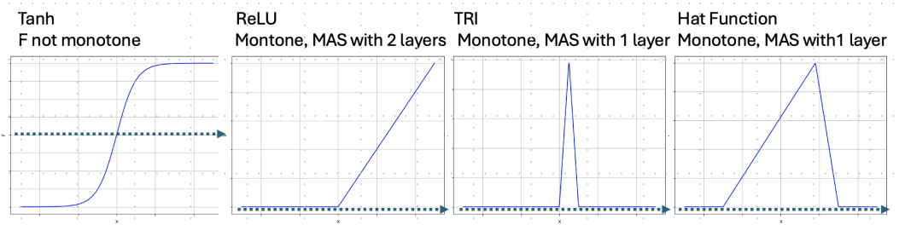
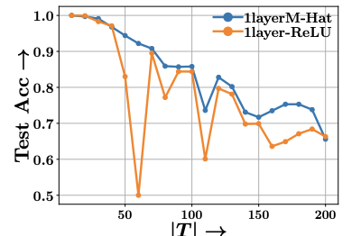
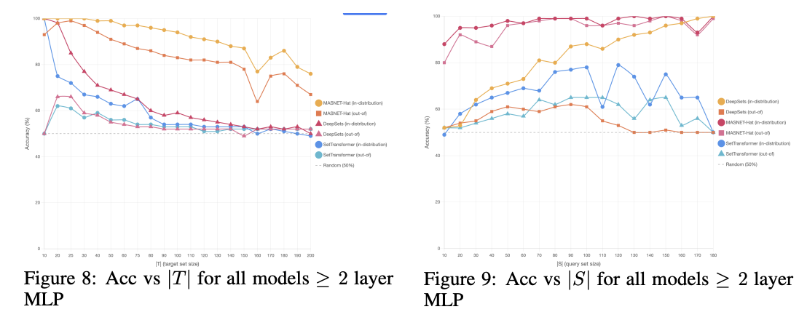

Monotone and Separable Set Functions
Characterizations and Neural Models
We study set-to-vector maps $F$ that preserve the natural partial order on multisets: $S \subseteq T \iff F(S) \le F(T)$. We call these Monotone and Separating (MAS) functions. We give tight bounds on the embedding dimension needed for MAS to exist, show that no such map exists for infinite ground sets, and introduce MASNET — a DeepSets-shaped model satisfying a probabilistic relaxation with provable Hölder stability.
§ 1Monotone, Separable, MAS
Let $V$ be the ground set and $\mathcal{P}_{<\infty}(V)$ the collection of finite multisets over $V$. Multiset containment uses multiplicities: $S \subseteq T$ iff $c_S(v) \le c_T(v)$ for all $v \in V$. Vector dominance is coordinatewise.
- Monotone.
- $S \subseteq T \;\Rightarrow\; F(S) \le F(T)$.
- Separable.
- $F(S) \le F(T) \;\Rightarrow\; S \subseteq T$.
- MAS.
- Both. The vector order on the image reproduces multiset containment exactly.
Every MAS function is injective, but injectivity is much cheaper: $m = 1$ is enough for injectivity, while — as the next section shows — MAS needs far more, and on infinite ground sets is impossible.
§ 2When Does a MAS Function Exist?
Let $m^\star(V, k)$ be the smallest output dimension admitting a MAS function $F : \mathcal{P}_{\le k}(V) \to \mathbb{R}^m$.
One-hot encoding $F(S) = \sum_{s \in S} e_s$ does it (upper bound). For the lower bound, suppose $m < n$. For each output coordinate $i$, pick the singleton that maximises $F(\{v\})[i]$ and collect these "max-elements" into a set $T$. Since $m < n$, some $u \in V$ is missed — yet $F(\{u\}) \le F(T)$ coordinatewise by construction, breaking separability. Conclusion: you need one output coordinate per ground-set element.
Random projection of the one-hot embedding. Start with the $n$-dimensional one-hot from Theorem 1, then project onto $m$ random vectors with non-negative entries — non-negativity preserves monotonicity automatically. A union bound over the worst-case "extreme pairs" (a singleton $S$ vs.\ a near-full $T$ excluding that singleton) shows that with high probability, $m = (k+2)^{k+2}\log n$ random projections separate every such pair.
The double-log bound is Erdős–Szekeres in disguise. Any real sequence of length $\ge N^2$ contains a monotone subsequence of length $N$. Apply this $m$ times to the singleton embeddings — once per coordinate — and three elements $v_1, v_2, v_3$ eventually emerge that are monotonically ordered in every coordinate. Then $\{v_2\}$ is dominated by $\{v_1, v_3\}$, breaking separability — so $m$ must be large enough that the recursion cannot run down to three. The $2k$ bound is Theorem 1's "max-element" argument refined for bounded $k$.
Theorem 3's lower bound $\log_2 \log_3 |V|$ diverges as $|V| \to \infty$, so no finite-dimensional MAS function survives on $V = \mathbb{R}^d$. This is the gap the rest of the paper fills — by relaxing to weakly MAS.
| Ground set | Cardinality $k$ | $m^\star(V, k)$ |
|---|---|---|
| $|V| = n < \infty$ | $k = \infty$ | $= n$ |
| $|V| = n < \infty$ | $2 \le k < n$ | $\max\{2k,\, \log_2 \log_3 n\} \le m^\star \le \min\{n,\, (k+2)^{k+2}\log n\}$ |
| $|V| = \infty$ | $k = 1$ | $= 2$ |
| $|V| = \infty$ | $k \ge 2$ | does not exist |
§ 3Hat Activations
Since MAS does not exist on $V = \mathbb{R}^d$, we work with parametric set functions $F(\cdot, w)$ that are pointwise monotone in $w$ and where every non-subset pair is separated by some $w$. The right activation makes this possible in a single layer.

The midpoint trick. Take $x \ne y$ and let $z = \tfrac{1}{2}(x + y)$, with $S = \{z\}$ and $T = \{x, y\}$. Since $Az + b$ is the average of $Ax + b$ and $Ay + b$, a non-negative monotone $\sigma$ forces $\sigma(Az + b) \le \sigma(Ax + b) + \sigma(Ay + b)$ pointwise — so $F(S) \le F(T)$ for every parameter choice, even though $S \not\subseteq T$. Monotonicity of $\sigma$ removes the ability to "spotlight" specific elements.
Compact support is the spotlight. If $S \not\subseteq T$, some element $s$ has higher multiplicity in $S$ than in $T$; tune $(a, b)$ so the hat's support contains $s$ but excludes the elements of $T$ near $s$. Then $\sigma$ fires for every copy of $s$ in $S$ and stays near zero on $T$, giving $F(S) > F(T)$. A monotone activation cannot be tuned this selectively — that is the difference Proposition 6 captures.
Two-layer ReLU networks can simulate a hat. Concretely, $\mathrm{TRI}(x) = \mathrm{ReLU}\big(\mathrm{ReLU}(2x) + \mathrm{ReLU}(2x - 2) - \mathrm{ReLU}(4x - 2)\big)$ is a triangular hat built from three ReLUs. Depth recovers in two layers what compact support gives in one — so MASNET can use either Hat activations (Proposition 9) or deeper ReLU MLPs (this proposition) and get the same guarantees.
§ 4Asymmetric Distance and Hölder Stability
Weak separability is Boolean. For a graded statement — almost-containment maps to almost-domination — we need an asymmetric notion of how far $S$ is from being a subset of $T$.
$\Delta(S, T) = 0$ iff $S \subseteq T$; small $\Delta$ formalizes approximate containment.
Weak separability only guarantees that some $w$ separates — but that "some" could be a measure-zero slice of parameter space. Lower Hölder upgrades the statement: the expected witness mass (the hinge-clipped excess of $F(S)$ over $F(T)$) scales as a power of the asymmetric distance $\Delta(S, T)$. Separation is not just possible but measurable, and grows gracefully with how far $S$ is from being inside $T$.
Random hat units parameterised by $(a, b, c)$ produce expected witness mass at least $c \cdot \Delta(S, T)^2$. The exponent 2 has a clean reading: the hat's support has linear width (contributing one factor of $\Delta$) and a positive derivative at the left edge (contributing the second). The conclusion: Hat-based MASNET is graded-stable, not just Boolean-separable.
Each hat unit independently separates any non-subset pair with probability at least $C \cdot \Delta(S, T)^2$. With $m$ independent units, the chance that all of them fail is at most $(1 - C\Delta^2)^m$ — exponentially small in $m$. Two takeaways: more embedding dimensions sharpen separation, and pairs farther from containment are easier to separate.
On a finite ground set, MAS is a complete inductive bias for monotone set functions. Compose any MAS encoder $F$ with a universal monotone vector-to-vector network (e.g.\ the monotonic nets of Sill, 1997) and you recover the entire class of monotone set functions — $F$ carries all the structural information; the downstream net handles the rest.
§ 5MASNET
$\mathrm{MASNET}(S) \;=\; M_{\theta_2}\!\left( \sum_{x \in S} \sigma\!\left( M_{\theta_1}(x) \right) \right)$
$M_{\theta_2}$ is the identity (or any monotone map); $M_{\theta_1}$ is an MLP whose depth and activation define the variant.
Trained with the margin hinge loss on labeled containment pairs $y(S, T) \in \{0, 1\}$:
$\sum_{S, T} (1 - y) \cdot \min_{i} [F(S)[i] - F(T)[i] + \delta]_+ \;+\; y \cdot \max_{i} [F(S)[i] - F(T)[i] + \delta]_+.$
§ 6Experiments
Four set-containment tasks: synthetic Gaussians, text bag-of-words, ModelNet40 point clouds, and monotone function approximation. Baselines: DeepSets (DS), Set Transformer (ST), FlexSubNet, Neural SFE.
Synthetic Gaussians
Targets $T \subset \mathbb{R}^d$ sampled i.i.d.\ $\sim \mathcal{N}(0, I)$, $d = 4$; positives are random subsets, negatives are fresh i.i.d.\ samples; $m = 256$.
| $|S|$ | $|T|$ | DS | ST | M-ReLU | M-Hat |
|---|---|---|---|---|---|
| 1 | 2 | 0.98 | 0.98 | 0.99 | 0.99 |
| 1 | 10 | 0.59 | 0.59 | 0.99 | 0.99 |
| 10 | 30 | 0.89 | 0.80 | 1.00 | 1.00 |
| 10 | 100 | 0.54 | 0.57 | 0.98 | 0.99 |

Text bag-of-words containment
MSWEB, MSNBC, Amazon-Bedding, Amazon-Feeding. BERT vocabulary embeddings ($d = 768$); Gaussian noise std 0.01 on $S$; class ratio 1:1; $m = 50$.
| Method | Bedding | Feeding | MSWEB | MSNBC |
|---|---|---|---|---|
| DeepSets | 0.51 | 0.50 | 0.88 | 0.67 |
| SetTransformer | 0.77 | 0.79 | 0.90 | 0.94 |
| FlexSubNet | 0.88 | 0.85 | 0.92 | 0.91 |
| Neural SFE | 0.52 | 0.53 | 0.88 | 0.66 |
| MASNET-ReLU | 0.98 | 0.98 | 0.99 | 0.97 |
| MASNET-Hat | 0.94 | 0.93 | 0.97 | 0.95 |
Point clouds on ModelNet40
$|T| = 1024$ points per object; positives subsample $S \subseteq T$, negatives draw from a different category; PointNet encoder; $m = 50$; noise std 0.005.
| Method | $|S| = 128$ | $|S| = 256$ | $|S| = 512$ |
|---|---|---|---|
| DeepSets | 0.52 | 0.51 | 0.50 |
| SetTransformer | 0.62 | 0.51 | 0.50 |
| FlexSubNet | 0.84 | 0.75 | 0.60 |
| Neural SFE | 0.52 | 0.51 | 0.50 |
| MASNET-ReLU | 0.98 | 0.94 | 0.72 |
| MASNET-Hat | 0.87 | 0.81 | 0.65 |

Monotone function approximation
Train a scalar MASNET to regress a held-out monotone target $F^\star$. MAS as a useful inductive bias outside containment.
| Method | Test MAE |
|---|---|
| DeepSets | $0.01024 \pm 0.00030$ |
| SetTransformer | $0.01026 \pm 0.00033$ |
| MASNET-ReLU | $0.01023 \pm 0.00107$ |
| MASNET-Hat | $0.00959 \pm 0.00016$ |
§ 7Cite
@inproceedings{
sarangi2026monotone,
title={Monotone and Separable Set Functions: Characterizations and Neural Models},
author={SOUTRIK SARANGI and Yonatan Sverdlov and Nadav Dym and Abir De},
booktitle={The Thirty-ninth Annual Conference on Neural Information Processing Systems},
year={2026},
url={https://openreview.net/forum?id=RSSk1SHxrH}
}
§ 8Contact
For questions or collaboration, reach out to any of the authors.